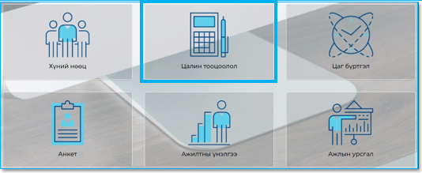
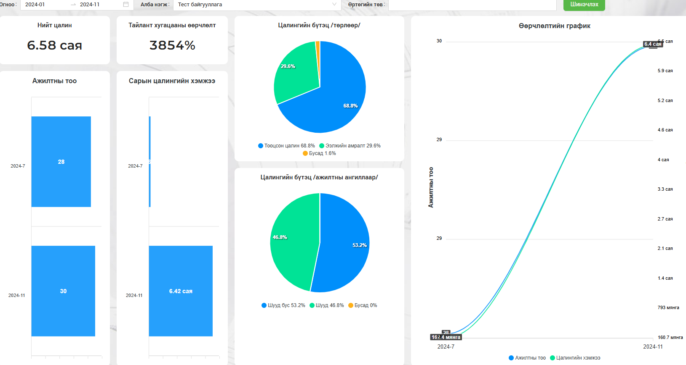

Цалин тооцооллын систем нь Хүний нөөцийн системд бүртгэгдсэн ажилтнуудад Цаг бүртгэлийн системд бүртгэгдэж, хянагдсан цагийн дагуу цалингийн тооцооллыг хийх, урьдчилж тохируулсан нэмэгдэл, хангамж болон суутгалыг тооцоолох, ээлжийн амралтын олговорын тооцооллыг хийх, нийгмийн даатгалын шимтгэл болон хувь хүний орлогын албан татварыг автоматаар тооцоолох замаар гарт олгох цалинг тооцоолох, банкны гүйлгээний файлыг үүсгэх зориулалттай систем юм.

